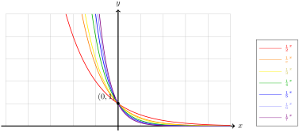

The number \(e\) is chosen for the exponential function specifically because it has nice analytic properties, which are the domain of calculus. Since these properties are beyond the scope of an algebra course, we focus only on the algebraic similarities between exponential functions with different bases.
Subsection6.3.1Changing the Base of the Exponential
When we defined the exponential function Section 6.1, there was nothing algebraically interesting about using the number \(e\text{.}\) We could just as well have chosen any other positive integer \(a \neq 1\) — we exclude \(a = 1\) simply because the constant function \(1^x = 1\) is rather boring. Had we chosen a different positive integer, we would have started from the following definition.
Definition6.3.1.
Assume \(a \neq 1\) is a fixed positive real number. The exponential function with base \(a\) is \(\Exp{a} \colon \R \to (0,\infty)\) defined by \(\Exp{a}(x) = a^x\text{.}\) The number \(a\) is called the base of the exponential function.
At this point, you might be trying to reconcile in your mind how there could be more than one. The answer, thankfully, is there really is not a second exponential function. Since the natural logarithm is defined for all positive real numbers, we can rewrite \(a = \exp \circ \ln(a)\) so that with a little algebraic gymnastics,
To understand the function \(\Exp{a}\) in general, we need to consider two cases. When \(a > 1\text{,}\)\(\ln(a) > 0\) and so \(\Exp{a}\) is simply a Horizontal Scaling of \(\exp\text{,}\) which we can see in Figure 6.3.2
Figure6.3.2.The graphs of the exponential functions with base \(2\text{,}\)\(e\text{,}\)\(3\text{,}\)\(4\text{,}\)\(5\text{,}\)\(6\text{,}\) and \(7\)
When \(a \lt 1\text{,}\)\(\ln(a) \lt 0\) and so \(\Exp{a}\) is obtained from \(\exp\) by a Reflection and a Horizontal Scaling of \(\exp\text{.}\)

Figure6.3.3.The graphs of the exponential functions with base \(1/2\text{,}\)\(1/e\text{,}\)\(1/3\text{,}\)\(1/4\text{,}\)\(1/5\text{,}\)\(1/6\text{,}\) and \(1/7\)
Subsection6.3.2Properties of Exponential Functions
Unsurprisingly, all of the same properties enjoyed by \(\exp\) are also enjoyed by \(\Exp{a}\text{.}\)
Since the exponential functions are defined for all real numbers, we can consider any interval of unit length by taking a number \(x\) as the left endpoint and \(x + 1\) as the right endpoint. Over this interval, the relative change is
Assume \(a \neq 1\) is a positive number. The number \(r = a - 1\) is called the growth rate of \(\Exp{a} \colon \R \to (0, \infty)\) if \(r > 1\) or the decay rate of \(\Exp{a} \colon \R \to (0, \infty)\) if \(r \lt 1\text{.}\)
When \(r > 0\text{,}\) we say the function \(\Exp{a} \colon \R \to (0, \infty)\) models exponential growth and we call the number \(a = 1 + r\) the growth factor.
When \(r \lt 0\text{,}\) we say the function \(\Exp{a} \colon \R \to (0, \infty)\) models exponential decay and we call the number \(a = 1 + r\) the decay factor.